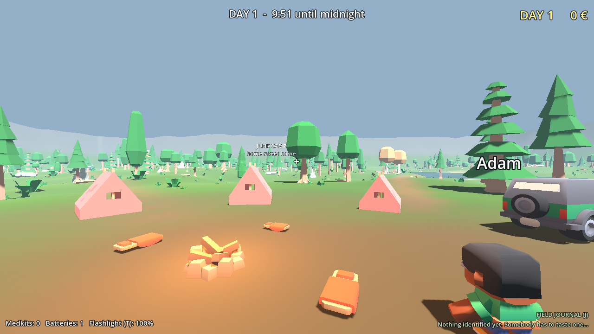
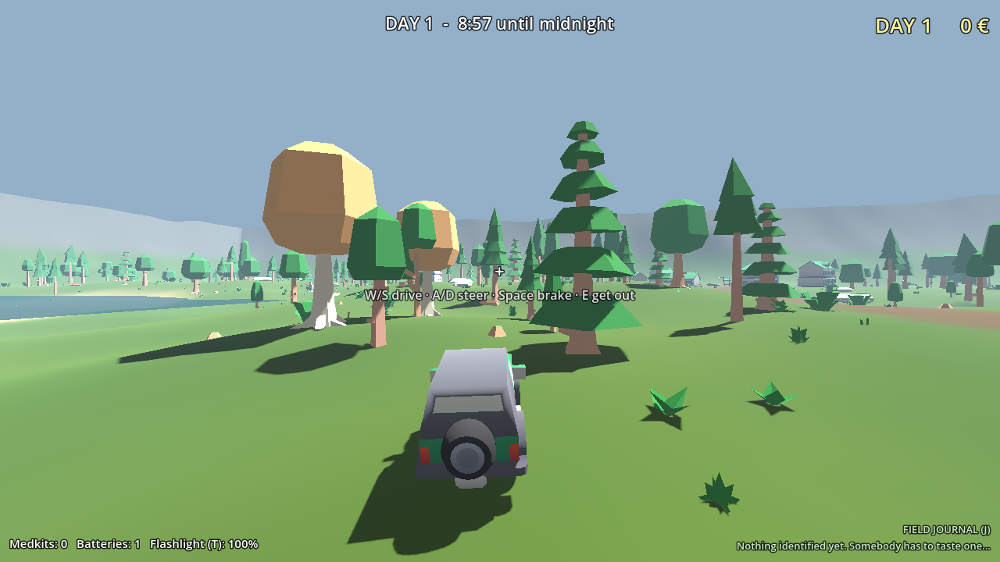
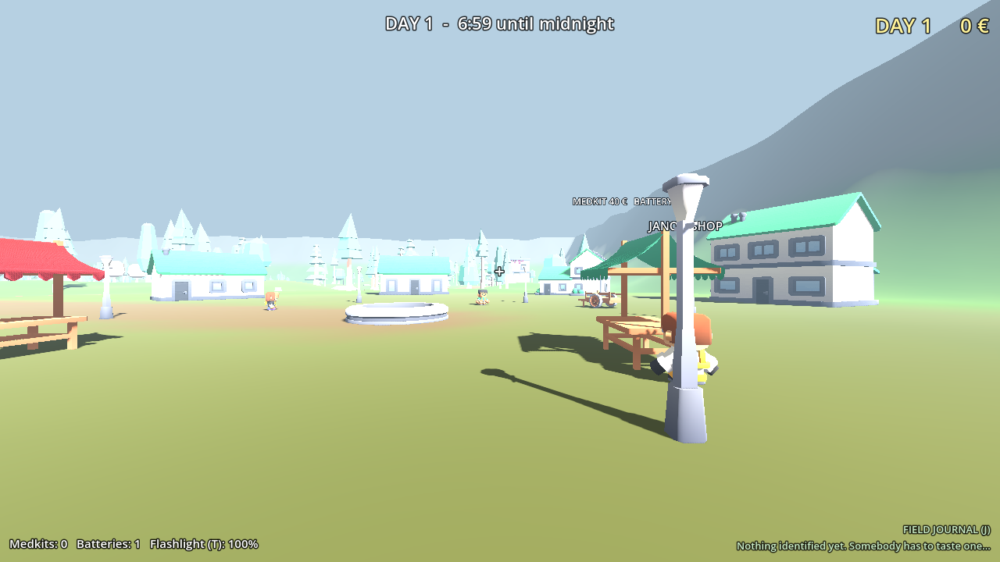
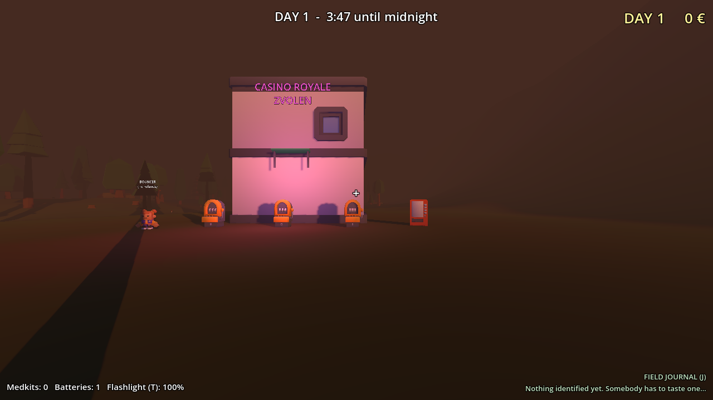
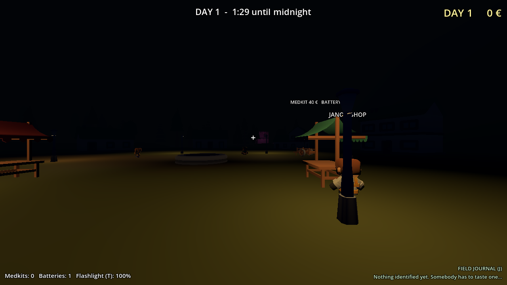

🧺
Forage, guess, regret
Sixteen species and every good one has an evil twin. Names stay hidden until Babka tells you, and the effects kick in a minute later, so nobody knows who ate what.
A co-op horror-comedy for 1 to 4 friends
Somebody has to taste them.
The factory closed on a Monday. By Wednesday, Adam, Denis, Janka and Miro were living in three faded tents in the forest outside the village, with a car that turns over if you look at it wrong and a loan from Uncle Fero, who does not wait.
They don't know how to do anything. But the forest is full of mushrooms, and Babka Hela in the village pays cash for the good ones. Some are dinner. Some are a trip. Some are a funeral. Nobody remembers which is which.
"Three days. Hundred fifty euro. Don't make me come back."Uncle Fero
Sixteen species and every good one has an evil twin. Names stay hidden until Babka tells you, and the effects kick in a minute later, so nobody knows who ate what.
At night the Hungry Hag hunts by sound. Your proximity voice, your walkie, your whistle. The friend who screams gets everyone eaten. Sometimes she calls you in your friend's voice.
Hold a mushroom, look at a friend, mash T. They mash T to keep their mouth shut. A meter swings between you. Science requires a volunteer.
Stay too long without light and you start hearing whispers and seeing things between the trees. Turn the torch on and it all stops. But the torch can be seen.
The map is huge, so you need the car. Corner too fast and it flips, and it takes two of you to heave it back. Bodies go on the roof rack.
Sell to Babka, buy batteries and a rubber duck from Jano, lose it all at Casino Royale Zvolen, and carry a rusty slot machine home from a ruin. Pay Fero or lose everything.
No minimap. Footpaths fork and loop. Someone always gets lost, and if they're gone too long the police turn up at camp asking questions and taking your cash.
At midnight the day's highlights play back: who died, who passed out, who walked into a tree twice. Made for streams and group chats.
Babka Hela's notes. Pages are torn. Names are smudged. Good luck.
+ eight more, including one that screams when you pick it up.
Carry the sick one to her hut in the swamp. "Bring me the guy, dearie." Then she sends you somewhere horrible for the cure, while the clock keeps ticking.
An abandoned Soviet sanatorium. The Nurse is blind and hunts by sound. Every tray clatters. Take the mould from the morgue and the doors lock behind you.
"Don't. Move."
A mine cart with a drunk driver, crawlspaces for one, a ghost who steals your lamp, and a gas pocket that really doesn't like flares.
"I'm stuck behind the rocks, can anyone hear me?"
The skeletons only move when nobody is looking at them. Somebody has to keep watching while somebody else grabs the Bone morel.
"DON'T LOOK AWAY."
A leaky rowboat, two rowers who must row in sync, and something underneath that bumps the boat. Again.
"Left. LEFT. Your other left."
Real screenshots from the current prototype.





1 to 4 players (up to 8 on LAN). Proximity voice and walkie-talkies built in. Runs on a potato.
Mushroom.exe. Everyone needs the same build.Prototype. Free low-poly art by Kenney and friends. Made in Godot.